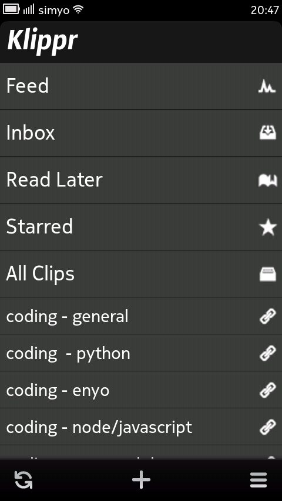
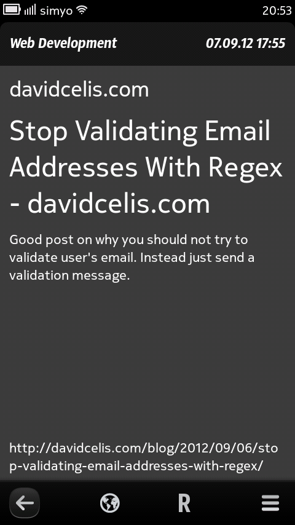
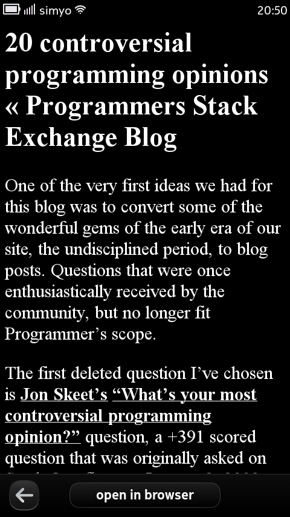

With kippt.com you can organize, archive and search your links.
Current version (Beta)
* 0.8.0 - 19.09.12 - click here to install
The stable version will get released in the Ovi Store.
Features:
- organize your boomarks in lists.
- save, edit and delete bookmarks
- create, edit and delete lists.
- fulltext search through your bookmarks
- mark bookmarks as "read later" or "starred"
- a reader view for reading your bookmarks in an optimized way, similar to Instapaper or ReadItLater.
- follow the lists of other kippt.com users you are following.
Not yet implemented:
Search- User profiles
- Better sharing option
- an improved reader
(fontsize etc) - packages for nemomobile and Mer
Screenshots
  
{kind=link}
{kind=link}
{kind=link}
{kind=link}
{kind=link}
Install
Click on the "Download .deb" button and follow the instructions.
Tips
To save links to kippt.com look at https://kippt.com/tools/.
Changelog
- 0.8.0
- Reader fontsize adjustable, username in Feed - 0.6.0
- Search added, bugfixes - 0.4.0
- "About" added
- Placeholder for Avatars in Feed
- UI modifications - 0.3.0
* First beta release